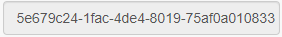
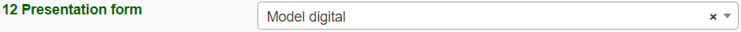

1. EGDI Metadata Cookbook Lite¶

Cookbook
for creating metadata records using
the EGDI Metadata Catalogue (MIcKA, version 6.0)
Authors: Pavla Kramolišová, Lucie Kondrová, Olga Moravcová, Štěpán Kafka (Czech Geological Survey)
Version and date: 26 February 2021
Table of contents
2. Metadata input by harvesting 6
3.1. Import from a service URL or from a file 8
3.2. Copy an existing record using the editing tools 9
3.3. Creation of a new record 9
3.3.2 General features of the editing environment 11
3.3.3 Minimum required elements for establishing a metadata record 15
3.3.6 Important steps at the end of the editing process 35
3.3.7 Additional information for advanced users 37
ANNEX: Overview of required and optional metadata items for different data sources 38
1.1. List of figures¶
Figure 1: The home page of the EGDI Metadata Catalogue (https://egdi.geology.cz/) 5
Figure 3: Overview of the harvesting resources for the administrator 7
Figure 4: Import metadata from a file (xml) or a spatial data service URL (GetCapabilities) 8
Figure 5: Copy record option 9
Figure 6: New record dialogue https://egdi.geology.cz/record/new for logged-in users 11
Figure 7: General features of the EGDI Metadata Catalogue 12
Figure 8: The main menu with tools in editing mode 13
Figure 9: Item Resource type in editing mode with context help 14
Figure 10: Record administration (editing and viewing rights, language settings) 14
Figure 11: Highlighting of the missing required elements 15
Figure 12: Contacts management for logged-in users (https://egdi.geology.cz/admin/contacts/) 22
Figure 13: Main menu in editing mode 35
Figure 14: Making the metadata record publicly available 35
Figure 15: Record backup – icon for XML creating 35
Figure 16: The EGDI-full editing form for advanced editors 37
1.2. List of tables¶
1.3. Abstract¶
The EGDI Metadata Catalogue (https://egdi.geology.cz/) is the central access point to metadata concerning structured digital geological data sources and web services across Europe. It provides tools for compilation of those metadata in a standardized format that will allow users to effectively search through the catalogue, view and further use the metadata. In order to make data discoverable in the most efficient way, the catalogue is fully compliant with international standards and supports the distributed system of metadata administration. Only digital and structured information (spatial datasets, including 3D models, spatial data series, and spatial data services such as WMS or WFS) should be described by metadata in this catalogue. In order to display a metadata record for which an on-line map service is available, the EGDI Metadata Catalogue is integrated into the EGDI Portal (http://www.europe-geology.eu/metadata/).
1.4. Introduction¶
This document shows how to use the EGDI Metadata Catalogue and how to fill the EGDI metadata step by step. The Cookbook guides the user to create a metadata record on an example for a spatial dataset and a spatial data service with an extension to describe 3D geological models.
The EGDI metadata profile is compliant with the requirements of the INSPIRE Directive as regards metadata, and the EN ISO 19115:2003(E) terminology is implemented and it is described in more technical details in a separate document [1].
The EGDI metadata are freely accessible to the public for viewing and searching, but inserting and editing is for authorized users only. The login information can be obtained on request from the administrator via email (egdi.metadata@geology.cz).
The EGDI Metadata Catalogue is available from: https://egdi.geology.cz/. Figure 1 shows the home page of the catalogue with the search interface and the list of found records. Figure 2 shows a detailed view of one metadata record for a spatial dataset with additional functionality for authorized users highlighted.

Figure 1: The home page of the EGDI Metadata Catalogue (https://egdi.geology.cz/)
{kind=link}
Figure 2: Basic view of a spatial dataset metadata record with a highlighted functionality for authorized users
1.5. Metadata input by harvesting¶
The first and the most recommended way for metadata creation is harvesting from another metadata catalogue. By using this approach, metadata are maintained at the most appropriate level (only once and close to the data source – that should ensure easier maintenance and update processes). Metadata can be inserted into the catalogue by harvesting of existing public records from a data provider’s catalogue, as well as from a national, project, or other metadata catalogue. Harvesting from remote catalogues and other sources can only be set by the EGDI Metadata Catalogue administrator on request from the data provider. It is possible to harvest just once (and update metadata manually), or set a regular harvesting interval (preferred option). Each harvesting session is documented by a harvesting report with a validation status that is sent to relevant contact points.

Figure 3: Overview of the harvesting resources for the administrator
Metadata contact person from an organization that wants to harvest their metadata must send to the administrator(egdi.metadata@geology.cz) the following information:
URL of resource CS-W metadata service
resource type
harvesting interval (1 day is recommended)
notification e-mail
In the list of harvested resources (see Figure 3) the last update is shown for each resource. A harvesting report is also available through RSS channel.
It is strongly recommended to denominate by the keyword „EGDI” (as free keyword) or keyword by the Project name codelists (from European Geoscience Registry https://data.geoscience.earth/ncl/project) any metadata record that should be harvested to the EGDI Metadata Catalogue. This should be done by the metadata editor in the source metadata catalogue.
1.5.1. Note: Every record is public by default after harvesting into the EGDI Metadata Catalogue. Record status is described in chapter 3.3.2 in the Record Administration paragraph in more details.¶
1.6. Manual input of metadata¶
The second way how to create a metadata record is the manual input directly in the EGDI Metadata Catalogue as a logged-in user with editing rights.
1.6.1. Import from a service URL or from a file¶
A metadata record can be imported by clicking “+New” in the top main menu (on https://egdi.geology.cz/record/new for logged-in users). If an XML file (ISO 19139) with metadata is available, choose the “Import from file/URL” option on the “New record” page and then either select the file (xml) from your disc, or enter the URL of a spatial data service (GetCapabilities).
Note:“Select file for import” has a priority if both fields (file and service URL) are filled.

Figure 4: Import metadata from a file (xml) or a spatial data service URL (GetCapabilities)
By switching the option “Existing record: Overwrite / Leave existing” the user can set the rules for importing if the record already exists.
Depending on the amount of information you are providing in the GetCapabilities document of the service, a corresponding part of the metadata elements will be automatically filled. You have to check this after creating the record and add manually the missing ones according to the rules described further in this cookbook (chapter 3.3.5).
1.6.2. Copy an existing record using the editing tools¶
The clone icon (Figure 5) enables the user to copy an existing record and use it as a template for creating a new record (on the https://egdi.geology.cz/ page for logged-in users).
Dataset example record:
https://egdi.geology.cz/record/basic/5e8b7243-18b0-4d85-ab71-36680a010833
3D model dataset example record:
https://egdi.geology.cz/record/basic/5e8b358e-7998-4f71-a363-2b260a010833
Service example record:
https://egdi.geology.cz/record/basic/5e8e29b8-e334-4b30-b78b-14750a010833

Figure 5: Copy record option
1.6.3. Creation of a new record¶
1.6.3.1. Primary settings¶
A new record is created by clicking “+New” in the top main menu. The new record creation dialogue is then displayed on the https://egdi.geology.cz/record/new page for logged-in users (Figure 6).
Here you should set:
Standard: you have to choose the option ISO 19115 standard (default) for spatial datasets, ISO 19119 for spatial data services.
Access rights: select the group for editing and the group for viewing. The group for editing should be the same as your username and it should be set in the combo-box (more information in chapter 3.3.2 in the “Record administration” part).
Metadata languages: the left column (radio buttons) is intended for the selection of the main language - since English was agreed as the primary language of the EGDI metadata, the English language is chosen by default. The right column (check boxes) is intended for setting other language that will be represented in the bilingual elements. The language setting can also be edited during the editing process in the header of record via the “Metadata language” icon (Figure 7).
1.6.3.1.1. Then click “Create” (Figure 6).¶
1.6.3.1.2. A new blank record is created (Figure 7).¶
1.6.3.1.3. Note: To be able to save the record you have to fill the minimum required elements as it is described in chapter 3.3.3.¶

Figure 6: New record dialogue https://egdi.geology.cz/record/new for logged-in users
1.6.3.2. General features of the editing environment¶
Some important features of the EGDI Metadata Catalogue application that are useful during the whole process of record editing are explained on the next figure (Figure 7) and in the following paragraph.
{kind=link}
Figure 7: General features of the EGDI Metadata Catalogue
Metadata editing form
On the top right side of the main menu at Figure 7 you can see which editing form is displayed in the main window.
There are two editing forms available:
EGDI-Lite – set by default, user friendly, easy to fill, less options
EGDI-full – follows the ISO structure and has more options, more metadata knowledge and experience is required on the editor’s side
For filling metadata according to this cookbook within the GeoERA projects you will use the EGDI-Lite editing form!
Main tools
In the top banner (Figure 8), there are the options to “Save” the record with the possibility to continue editing (save your record often during editing!), “Stop” (= Save + stop editing), and “Cancel” to abort the last editing session. The metadata record can be saved only if some basic mandatory fields are filled properly (see more in 3.3.3).
1.6.3.2.1. ¶
{kind=link}
Figure 8: The main menu with tools in editing mode
Validation
A small validation panel is displayed on the right side of the form
(Figure 7). To refresh validation you should “Save” the record or
press the refresh button ( ).
).
The metadata are validated with a built-in validator, which may be configured according to the provider requirements. Default is the validation against INSPIRE TG for metadata, version 2.0.1 [3]. Only validation errors are displayed here. After clicking on the item, the page is scrolled to the corresponding input field in the form.
There are three types of elements as regards their obligation in the metadata profile:
Mandatory elements - required in the profile (mandatory in its context, e.g. if an optional element A contains mandatory element B, then when any sub-element in A is used, also element B must be filled. Example: If any element in ContactInfo / on-line is filled, then the URL must be filled).
Conditional mandatory elements - these elements are strongly recommended or required on certain conditions given by the standard or INSPIRE regulation. (E.g. bounding box is mandatory if data/services have a spatial extent).
Optional elements - may be required by some applications.
Form field types
Different data type fields are coloured differently according to their type:
 Mandatory fields - must be filled.
Mandatory fields - must be filled. Text fields - any text value can be input there
Text fields - any text value can be input there Numeric fields - only digits and decimal point (“.”) are
Numeric fields - only digits and decimal point (“.”) areallowed.
 Date fields – ISO 8601 format is allowed (“YYYY”,
Date fields – ISO 8601 format is allowed (“YYYY”,“YYYY-MM” or “YYYY-MM-DD”).
-  Automatically filled fields - 29 File identifier –
generated UUID
 - it is possible to insert manually more values
- it is possible to insert manually more values
{kind=link}
{kind=link}
{kind=link}
 - Icon “Select other metadata languages from the list”
marks that there is a predefined list of values to select languages
- Icon “Select other metadata languages from the list”
marks that there is a predefined list of values to select languages
 - Icon creates a new empty element
- Icon creates a new empty element
- Icon gives the user the option to delete the related elements
{kind=link}
Context help
Context help is taken from the INSPIRE directive in the EGDI-Lite editing form (see Figure 9 below – “1.3 Resource type…” numbering and text is taken from the INSPIRE directive). For the elements that are an extension to INSPIRE the context help is taken from ISO 19115 standard. Context help is available in the black bubble when a cursor is hovering over the field label.
1.6.3.2.2. ¶
{kind=link}
Figure 9: Item Resource type in editing mode with context help
Record administration
Editor can do this setting for each metadata record at the page sub-heading (Figure 10):
Record “status” – “Public”/ “Private” - If the record is “Public”, every user can see it without any authorization. If it is “Private”, only editor and administrator can see it.
“Group for editing” – the group of your organization should be chosen from the list
Group “For viewing” – After editing this group should be set as reader so that all users can view the record in the catalogue.
“Metadata language” - what metadata languages are used. The number of displayed language versions depends on the number of languages you selected during creation of the record but may be changed there (Figure 10).

Figure 10: Record administration (editing and viewing rights, language settings)
Note:All general features of the catalogue are described in detail in “***Micka – quick help*” directly in the application (https://egdi.geology.cz/help).
1.6.3.3. Minimum required elements for establishing a metadata record¶
1.6.3.3.1. Once a record is created, a proposed minimum of the EGDI (GeoERA) metadata elements should be filled. Without these minimum items the metadata record cannot be saved:¶
1 |
Resource title |
|---|---|
2 |
Resource abstract |
3 |
Resource type |
19 |
Responsible party |
28.1. |
Metadata point of contact |
Table 1: Minimum required elements
1.6.3.3.2. It is strongly recommended to add appropriate Project name from the European Geoscience Registry (https://data.geoscience.earth/ncl/project) in the metadata element 10.1 Keyword. The Project name codelist is implemented in the editing as well as in the search form of the EGDI Metadata Catalogue.¶
Note: Annex 1shows anoverview tableof all the mandatory and optional metadata elements according to the described data source.

Figure 11: Highlighting of the missing required elements
The next two chapters provide more detailed instructions on how to fill these elements for spatial datasets and spatial data services.
1.6.3.4. Detailed instructions for filling the EGDI metadata profile elements in the EGDI-Lite editing form for a spatial dataset (including extensions for 3D models)¶
Example of an English-Czech bilingual record (can be in any other national language + English).
Note:The images of all metadata elements below are created from example dataset record:https://egdi.geology.cz/record/basic/5e8b7243-18b0-4d85-ab71-36680a010833
and 3D model dataset record: https://egdi.geology.cz/record/basic/5e8b358e-7998-4f71-a363-2b260a010833
1 Resource title - Name by which the cited resource is known.
1.6.3.4.1.  ¶
¶
2 Resource abstract - Brief narrative summary of the content of the resource(s).

3 Resource type - Valid values for the EGDI projects are dataset, series, non-geographic dataset. For 3D models choose “dataset”.

Note:A different profile is used to describea serviceoran application. It can be selected at the beginning of the record creation process (Figure 6 in chapter 3.3.1) and a detailed description for the filling is described in detail in chapter 3.3.5.
4 Resource locator – Electronic address (URL, their function and a relevant protocol) of an on-line access to the resource, if it exists. “Name” and “Description” are optional.
{kind=link}
5 Unique resource identifier - Recommended format for the unique identification of the resource is the organization ID (e.g. domain name) and an identifier of the dataset defined by the data provider, e.g. http://www.domain.org/internal_identifier.
{kind=link}
6 Coupled resource - Not applicable for datasets, only for services - see [1]
7 Resource language – Language(s) used within the datasets/series. Select one or more from the list. If no language is used in the resource (e.g. only numeric data), select: “no language”.

8 Topic category for geological and applied geological data should be set to “Geoscientific information”. But it can be selected one or more category from the code list.

9 Service type - Not applicable for datasets, only for services - see [1].
1.6.3.4.2. 10.1 Keyword(s) can be selected from the predefined list, some of the required external registers and codelists are integrated directly in the EGDI Metadata Catalogue. In addition to that, any other words can be filled as a Free keyword.¶
At least one keyword for the INSPIRE theme from the INSPIRE registry (https://inspire.ec.europa.eu/theme/) has to be filled.
At least one keyword from the GeoERA keyword thesaurus has to be filled.
One keyword for the Project name from the European Geoscience Registry (https://data.geoscience.earth/ncl/project) should be added. And if the dataset is related to the GeoERA project it is strongly recommended to add appropriate Project name to be easily searchable by Project.
The Spatial scope keyword from the INSPIRE registers (http://inspire.ec.europa.eu/metadata-codelist/SpatialScope) has to be selected. For INSPIRE data it is obligatory, but it is recommended for all other datasets as well.
Priority dataset keyword is mandatory only for determined datasets related to the environmental reporting within the INSPIRE directive. Keyword from the INSPIRE registers (http://inspire.ec.europa.eu/metadata-codelist/PriorityDataset) has to be added.
Any other Free keyword can be added here as free text as well.
{kind=link}
Note:For datasets of 3D models, keywords oftype stratum, temporal and disciplineare available in the EGDI-full editing form only. It is possible to add these elements as free keywords and with a properly cited Thesaurus (title, date, date type) – see figure below.Please note that these keywords with cited thesaurus are visible in the EGDI-full editing form only, but are not visible in the EGDI-Lite form.

11.1 Geographic location – Defined by the western and eastern longitude and the southern and northern latitude in decimal degrees (2 digits precision) in the WGS-84 coordinate system.
There are three ways for filling this item:
The extent can be drawn by a tool ( ) in the map and the coordinates will be added automatically into the form.
Each coordinate can be manually filled one by one
Choose one of the European countries or the whole EU (according to the range of data) from the 11.2 Geographic identifier list and then the relevant coordinates will be filled in 11.1 Geographic location automatically.
{kind=link}
{kind=link}
11.2 Geographic identifier: Fill in only when Spatial Scope is not local or regional. Then select from the code list value (for example: one of the European Countries, “Europe”, “World” or “European Union”). The selection automatically affects the coordinates in the field 11.1 Geographic location.
12 Presentation form – Mandatory for 3D models. “Model digital” should be chosen from the codelist and then the validation rules are changed to meet the requirements for the metadata description of 3D models.

13 Edition - Conditional for 3D models, mandatory, if there are/will be more versions of the model.
1.6.3.4.3.  ¶
¶
14.1 Reference date - Date (YYYY-MM-DD) of the data source creation must be filled, optionally also other types of reference dates can be added. Only one date for each event (creation/publication/last revision) is allowed.

14.2 Resource temporal extent - If the resource has a temporal extent, you can specify either a range of dates relevant for the dataset, or a single date. To enter instant date (YYYY-MM-DD or YYYY) leave the second field empty. In case the time period is open-ended with either the start or the end date unknown, enter “?” to the corresponding field. If the temporal extent is on-going, enter “now” to the corresponding field.

15 Lineage description of the history of processing and the overall quality of the dataset, including information on the input data, SW used, if the data/model has been approved etc.

16 Spatial resolution can be described by the equivalent scale (denominator only) or by a distance in meters.

Note:Also a range of scales can be added by simply typing another scale number
17 Conformity - Citation of the implementing rules adopted according to the Article 7, section 1 of the 2007/2/ES Directive (INSPIRE). Appropriate 17.1 Specification of a document you are referring to should be select from the predefined list; for the dataset “INSPIRE – Interoperability 1089/2010” is the right value. If the dataset or dataset series are not within the scope of INSPIRE, fill in the citation of the Directive and then the element 17.2 will have the value “NOT EVALUATED”.

18.1 Conditions applying to access and use restrictions on the access and use of a resource or metadata, licences, fees of the dataset and other conditions (field Other – description) shall be provided, if applicable (text description or a URL of a descriptive document). If no conditions apply, or are unknown then you can select these values (as well as the type of licence) from the codelist.
{kind=link}
18.2 Limitations on public access – Description of a reason of a limitation on public access to a dataset or a service according to the Article 13 of the 2007/2/ES Directive should be filled in the Predefined field by choosing from the codelist. Also, other conditions (Other - description field) can be filled as a free text. You can also mark the data as “open data” in this element.
{kind=link}
19 Responsible party – Contact person/organisation can be filled item by item (Enter key confirms typing) or edited once in “Settings” on the https://egdi.geology.cz/admin/contacts/ page for logged-in users (Figure 12) and then used in more metadata records.


Figure 12: Contacts management for logged-in users (https://egdi.geology.cz/admin/contacts/)
Name of Organization should be entered in English (and in national language if it is defined as the second language). It is recommended to add organization´s abbreviation in the parentheses at the end, for example “Czech Geological Survey (CGS)”.
Note: The Codelist of the EuroGeoSurveys´ organizations (URL) is under preparation – then it will be possible to choose the organization name from this list.
Email field should be filled as well and Role field value must be set to “custodian”. This optional field is important for an effective use of metadata search.
Other contacts can be added in the same way by multiplying the whole element 19, filling the necessary information and setting the role to “distributor” (distribution information), “point of contact” (information about data), etc.

20 Data quality scope – Is not displayed in the EGDI-Lite form and is automatically filled in accordance with element 3 Resource type.
21 Coordinate reference system - Description of the coordinate reference system(s) used in the dataset. Select one or more from the list. INSPIRE compliant value have the denomination [INSPIRE] in square brackets at the end of the coordinate reference system abbreviation.

22 Vertical reference system - mandatory for 3D models. Description of the vertical reference system used in the dataset. Select one or more from the list.

23 Vertical extent - Conditional for 3D models. Vertical limits of the model interlinked with the reference system in element 23.3 Vertical extent reference system - local system or a defined vertical coordinate system. For describing the model depth in a local system, choose Local - depth (EPSG code 1049) and enter positive values of vertical limits (Z axis is in the direction from the surface to the Earth’s core).
{kind=link}
24 Distribution format - The value can be either selected from the codelist, or entered as a free text (especially in the case of a specialized modelling SW).

25 Spatial representation type - Method used to spatially represent geographic information. Select one or more from the list.

26 Maintenance and update frequency - Provides information about the frequency of resource updates, and the scope of those updates.

Note:If the desired interval is not present in the Frequency codelist, choose the value “unknown” and in the user defined frequency element fill the appropriate interval in accordance with the ISO 8601: P<number><period>, where period is Y – year, M-month, D-day, H-hour, for ex. “P5Y” denominates the period of 5 years.
27 Purpose - Summary of purposes for which the data source was created (internal project identifier, scope, type of data/model, etc.).

28.1 Metadata Contact - Organization responsible for creating and maintenance of metadata. Contact person/organisation can be filled item by item (Enter button confirms typing) or edited once in “Settings” (Figure 12) and then used in more metadata records. Email field should be filled as well and Role field value must be set to “Point of contact”.
{kind=link}
28.2 Metadata date - Date stamp (date of last editing) is created automatically.
28.3 Metadata language - Metadata language can be administered in the sub-heading of the record (see chapter 3.3.2).

29 File identifier - Identifier of the metadata file is generated automatically as UUID.
{kind=link}
30 Parent identifier - Identifier of the parent metadata file can be chosen from the list of existing metadata records (e.g. if a dataset belongs to a data set serie). Parent should be filled first in the EGDI Metadata Catalogue and then it will appear in the list and will be available for all editors to choose it as the parent record.
{kind=link}
Note: To complete the editing, it is necessary to go through the steps in the chapter 3.3.6
1.6.3.5. Detailed instructions for filling the EGDI profile elements in the EGDI-Lite editing form for a spatial data service/application¶
Example of an English-Czech bilingual record (can be in any other national language + English).
Note:The images of all metadata elements below are created from example service record:https://egdi.geology.cz/record/basic/5e8e29b8-e334-4b30-b78b-14750a010833
1 Resource title - Name by which the cited resource is known.
1.6.3.5.1. ¶
2 Resource abstract - Brief narrative summary of the content of the resource(s).

3 Resource type - Valid values for the EGDI projects are service and application.

Note:A different profile is used for a dataset. It can be selected at the beginning of the record creation process (Figure 6 in chapter 3.3.1) and detailed descriptions for the filling are described in detail in chapter 3.3.4.
4 Resource locator – Electronic address (URL, their function and a relevant protocol) of an on-line access to the resource, if it exists. “Name” and “Description” are optional.
{kind=link}
5 Unique resource identifier - Recommended format for the unique identification of the resource is organization ID (e.g. domain name) and identifier of the dataset defined by the data provider, e.g. http://www.domain.org/internal_identifier.
{kind=link}
6 Coupled resource - Only for services, not applicable for datasets. Provides information on the datasets that the service operates on, the appropriate entry should be selected from the list of value. Dataset should be described in the EGDI Metadata Catalogue first and then the name of the metadata record will appear in the list (in primary language of the metadata). List will be available for all editors to choose it as the resource. 6.2. Coupling type is mostly „tight”, when the service works directly with specific data.
{kind=link}
7 Resource language – Not applicable for services, only for datasets - see [1]
8 Topic category - Not applicable for services, only for datasets - see [1]
9 Service type - Only for services, not applicable for datasets. A service type name select from the codelist.
{kind=link}
1.6.3.5.2. Keyword can be selected from the predefined list, some of the required external registers and codelists are integrated directly into the EGDI Metadata Catalogue. In addition to that, any other words can be filled as a Free keyword.¶
INSPIRE service classification from the INSPIRE registry (https://inspire.ec.europa.eu/metadata-codelist/SpatialDataServiceCategory) should be selected from the codelist.
At least one keyword for the INSPIRE theme from the INSPIRE registry (https://inspire.ec.europa.eu/theme/) has to be filled.
At least one keyword from the GeoERA keyword thesaurus has to be filled.
One keyword for the Project name from the European Geoscience Registry (https://data.geoscience.earth/ncl/project) should be added. And if the service is related to the GeoERA project it is strongly recommended to add appropriate Project name to be easily searchable by Project.
Any other Free keyword can be added here as free text as well.
{kind=link}
11.1 Geographic location – Defined by the western and eastern longitude and southern and northern latitude in decimal degrees (2 digits precision) in the WGS-84 coordinate system.
There are three ways for filling this item:
The extent can be drawn by a tool ( ) in the map and the coordinates will be added automatically into the form.
Each coordinate can be manually filled one by one
Choose one of the European countries or the whole EU (according to the range of data) from the 11.2 Geographic identifier list and then the relevant coordinates will be filled in 11.1 Geographic location automatically.
Note:If metadata record of the service was imported from theGetCapabilitiesfile from the map server,11.1 Geographic locationis filled in automatically
11.2 Geographic identifier: Fill in only when Spatial Scope is not local or regional. Then select from the list value (for example: European Country, “Europe”, “World” or “European Union”).
12 Presentation form – Not applicable for services, only for datasets - see [1]
13 Edition - Not applicable for services, only for datasets - see [1]
14.1 Reference date - Date (YYYY-MM-DD) of creation must be filled, optionally also other types of reference dates can be added (publication date/date of the last revision).
14.2 Resource temporal extent - if the resource (service) has a temporal extent, you can specify either a range of dates relevant for theservice, or a single date. To enter instant date (YYYY-MM-DD or YYYY) leave the second field empty. In case the time period is open-ended with either the start or the end date unknown, enter “?” to the corresponding field. If the temporal extent is on-going, enter “now” to the corresponding field.
15 Lineage - Not applicable for services, only for datasets - see [1]
16 Spatial resolution - Not applicable for services, only for datasets - see [1]
17 Conformity - Citation of the implementing rules adopted according to the Article 7, section 1 of the 2007/2/ES Directive (INSPIRE). Appropriate 17.1 Specification of a document you are referring to should be select from the predefined list, for the service “INSPIRE – Network services 976/2009” is the right value. If the service is not within the scope of INSPIRE, fill in the citation of the Directive and then the element 17.2 will have the value “NOT EVALUATED”.
{kind=link}
18.1 Conditions applying to access and use - Constraints applied to assure the protection of privacy or intellectual property, and any special restrictions or limitations or warnings on using the resource or metadata. If no conditions apply or are unknown, then you can select these values (as well as type of licence) from the list.
{kind=link}
18.2 Limitations on public access – Description of a reason of a limitation on public access to a dataset or a service according to the Article 13 of the 2007/2/ES Directive should be filled in the Predefined field by choosing from the list. Also, other conditions (Other - description field) can be filled as a free text. You can also mark the data as “open data” in this element.
{kind=link}
19 Responsible party – Contact person/organisation can be filled item by item (Enter key confirms typing) or edited once in “Settings” on the https://egdi.geology.cz/admin/contacts/ page for logged-in users (Figure 12) and then used in more metadata records.
Name of Organization should be entered in English (and in national language if it is defined as the second language) It is recommended to add organization´s abbreviation in the parentheses at the end, for example “Czech Geological Survey (CGS)”.
Note: The Codelist of the EuroGeoSurveys´ organizations (URL) is under preparation – then it will be possible to choose the organization name from this list.
Email field should be filled as well and Role field value must be set to “custodian”. This optional field is important for an effective use of metadata search.
Contact information for distribution of data can be added in the same way (by multiplying the whole element 19, filling the necessary information and setting the role to “distributor”).
20 Data quality scope – Not applicable for services, only for datasets - see [1]
21 Coordinate reference system - Description of the coordinate
reference system(s) used in the service. Select one or more from the
list. INSPIRE compliant value have the denomination [INSPIRE] in square
brackets at the end of the coordinate reference system
abbreviation.
22 Vertical reference system - Mandatory for 3D models. Description of the vertical reference system used in the service. Select one or more from the list.
{kind=link}
23 Vertical extent - Not applicable for services, only for datasets - see [1]
24 Distribution format - Not applicable for services, only for datasets - see [1]
25 Spatial representation type - Not applicable for services, only for datasets - see [1]
26 Maintenance and update frequency - Not applicable for services, only for datasets - see [1]
27 Purpose - Not applicable for services, only for datasets - see [1]
28.1 Metadata Contact - Organization responsible for creating and maintenance of metadata.
Contact person/organisation can be filled item by item (Enter button confirms typing) or edited once in Settings (Figure 12) and then used in more metadata records. Email field should be filled as well and Role field value must be set to “Point of contact”.
28.2 Metadata date
Date stamp (date of last editing) is created automatically.
28.3 Metadata language
Metadata language can be administered in the sub-heading of the record (see chapter 3.3.2).
29 File identifier - Identifier of the metadata file is generated automatically as UUID.
30 Parent identifier - Not applicable for services, only for datasets - see [1]
1.6.3.6. Important steps at the end of the editing process¶
Save and check the validation status and then stop and save editing mode by the tool “Stop” in the main menu (Figure 13)!

Figure 13: Main menu in editing mode
Metadata record publication
After filling and saving the metadata record, please check that it is made public and Group for viewing is set as reader by checking the appropriate checkbox (Figure 14) at the page sub-heading, so that all users can search and view the record.
1.6.3.6.1. ¶
{kind=link}
Figure 14: Making the metadata record publicly available
Metadata record backup
After finishing your editing session, please always create an XML file of your record as a backup copy for yourself from the basic metadata view for the logged-in users (Figure 15), just to make sure you do not lose any of your metadata in any case:
{kind=link}
Figure 15: Record backup – icon for XML creating
Metadata Cookbook availability
This document “Cookbook for creating metadata records using the EGDI Metadata Catalogue (MIcKA, version 6.0)” and document “EGDI Metadata profile” (reference [1]) is integrated directly in the EGDI Metadata Catalogue (https://egdi.geology.cz/catalog/micka/docs) for authorized users and it is also available on the GitHub as MIcKA Documentation https://czechgeologicalsurvey.github.io/MICKA-Docs/ and on the GeoERA Data provider support webpage (https://geoera-gip.github.io/support/).
1.6.3.7. Additional information for advanced users¶
EGDI-full editing form
The EGDI-full editing environment (Figure 16) is also available to use for creating metadata within the EGDI Metadata Catalogue. The EGDI-full editing form follows the ISO structure and has more options. Advanced metadata knowledge and experience is required on the editor’s side, so it is NOT RECOMMENDED for beginners. If anyone would like to use it, please contact us with any issues and concerns on egdi.metadata@geology.cz.
For filling metadata according to this cookbook within the GeoERA projects it is strongly recommended to use the EGDI-Lite editing form.
{kind=link}
Figure 16: The EGDI-full editing form for advanced editors
1.7. ANNEX: Overview of required and optional metadata items for different data sources¶
EGDI pr ofile |
INSPIRE profile nr |
MD element title** |
ma ndatory minimum |
Ob liga tion/co ndition ac cording to de scribed data source Maximum occurr ence |
||
|---|---|---|---|---|---|---|
All m etadata so urces |
“2D” da taset |
3D model |
S ervice, applic ation |
|||
1 |
1.1 |
R esource title |
[1] |
[1] |
[1] |
[1] |
2 |
1.2 |
R esource a bstract |
[1] |
[1] |
[1] |
[1] |
3 |
1.3 |
R esource type |
[1] |
[1] |
[1] |
[1] |
4 |
1.4 |
R esource locator |
[0..*] |
[0..*] |
[0..*] |
|
5 |
1.5 |
Unique r esource ide ntifier |
[1..*] |
[1..*] |
[1..*] |
|
6.1 |
1.6 |
Coupled r esource |
not app licable |
not app licable |
[0..*] |
|
6.2 |
C oupling type |
not app licable |
not app licable |
[1] |
||
7 |
1.7 |
R esource l anguage |
[1..*] |
[1..*] |
not app licable |
|
8 |
2.1 |
Topic c ategory |
[1..*] |
[1..*] |
not app licable |
|
9 |
2.2 |
Service type |
not app licable |
not app licable |
[1] |
|
10.1 |
3.1 |
Keyword |
[1..*] |
[1..*] |
[1..*] |
|
10.2 |
3.2 |
Orig inating con trolled voc abulary |
[1..*] |
[1..*] |
[1..*] |
|
11.1 |
4.1 |
Geo graphic l ocation |
[1..*] |
[1..*] |
[1..*] |
|
11.2 |
Geo graphic ide ntifier |
[0..*] |
[0..*] |
[0..*] |
||
12 |
Prese ntation form |
[0..*] |
[1..*] |
not app licable |
||
13 |
Edition |
[0..*] |
[0..*] |
not app licable |
||
14.1 |
5 |
Re ference date |
[1..*] |
[1..*] |
[1..*] |
|
14.2 |
5.1 |
R esource t emporal extent |
[0..*] |
[0..*] |
[0..*] |
|
15 |
6.1 |
Lineage |
[1] |
[1] |
not app licable |
|
16 |
6.2 |
Spatial res olution - Scale/D istance |
[0..*] |
[0..*] |
not app licable |
|
17.1 |
7.1 |
Con formity – Specif ication |
[1..*] |
[1..*] |
[1..*] |
|
17.2 |
7.2 |
Con formity - Degree |
[1] |
[1] |
[1] |
|
18.1 |
8.1 |
Con ditions a pplying to access and use |
[1..*] |
[1..*] |
[1..*] |
|
18.2 |
8.2 |
Limi tations on public access |
[1..*] |
[1..*] |
[1..*] |
|
19 |
9.1 |
Resp onsible party |
[1] |
[1..*] |
[1..*] |
[1..*] |
20 |
12 |
Data quality scope |
[1] |
[1] |
not app licable |
|
21 |
IOD-1* |
Coo rdinate re ference system |
[1..*] |
[1..*] |
[0..*] |
|
22 |
V ertical re ference system |
[1] |
[1] |
[0..*] |
||
23.1 |
V ertical extent – max. model depth |
not app licable |
[1] |
not app licable |
||
23.2 |
V ertical extent – min. model depth |
not app licable |
[1] |
not app licable |
||
23.3 |
V ertical extent re ference system |
not app licable |
[1] |
not app licable |
||
24 |
IOD-3* |
Distr ibution format |
[1..*] |
[1..*] |
not app licable |
|
25 |
IOD-6* |
Spatial represe ntation type |
[1..*] |
[1..*] |
not app licable |
|
26 |
Main tenance and update fr equency |
[0..1] |
[0..1] |
not app licable |
||
27 |
Purpose |
[0..1] |
[0..1] |
not app licable |
||
28.1 |
10.1 |
M etadata point of contact |
[1] |
[1..*] |
[1..*] |
[1..*] |
28.2 |
10.2 |
M etadata date |
[1] |
[1] |
[1] |
|
28.3 |
10.3 |
M etadata l anguage |
[1..*] |
[1..*] |
[1..*] |
|
29 |
2.2.1 |
File ide ntifier |
[1] |
[1] |
[1] |
|
30 |
Parent ide ntifier |
[0..1] |
[0..1] |
not app licable |
*Metadata elements marked with the “IOD” prefix are metadata elements for interoperability as defined in INSPIRE data specifications
1.8. References¶
Kondrová, Š. Kafka, G. Diepolder, O. Moravcová, P. Kramolišová. EGDI Metadata profile Methodology for the unified metadata description of the results of GeoERA projects within the European Geological Data Infrastructure (EGDI) with the extension to describe 3D geological models, version 1.2, 2020-03-19
- Dana Čápová, Štěpán Kafka, Lucie Kondrová, Pavla Kramolišová, Olga
Moravcová. Cookbook for creating multilingual metadata records using the EGDI Metadata Catalogue (MIcKA), version 0.1, reviewed February 2017
Technical Guidelines for implementing dataset and service metadata based on ISO/TS 19139:2007, version 2.0.1, 2017-03-02
EN ISO 19115 Geographic Information – Metadata, 2003
- Czech National Metadata Profile, version 4.2 (24.01.2020, TWG
Metadata)
EC Directive 2007/2/EC (INSPIRE)
EC REGULATION No 1205/2008 (Metadata)
- Čápová, D. – Moravcová, O. – Kondrová, L. – Kramolišová, P. (2019):
GeoERA Information Platform - Deliverable 7.1: Working version Metadatabase.